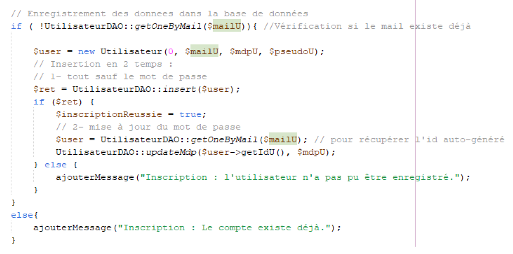
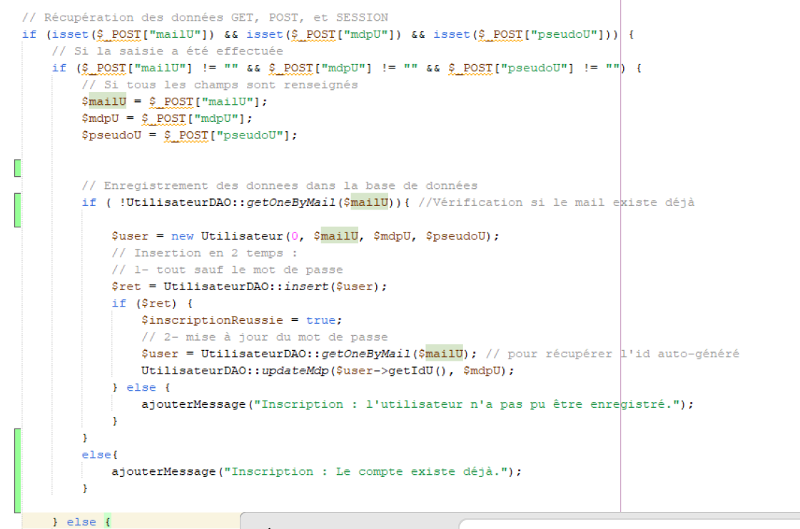
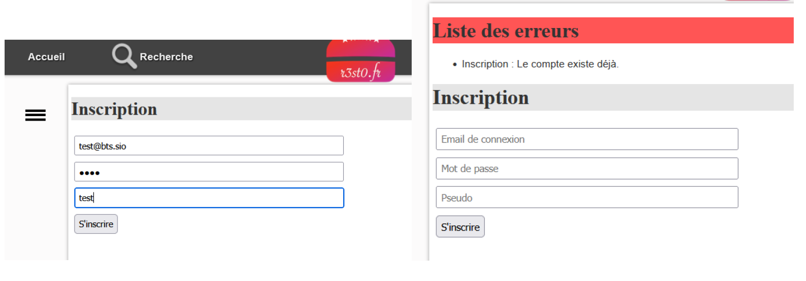

L'objectif de ce ticket était de vérifier lors de l'inscription qu'un utilisateur ne puisse pas créer un compte avec un email déjà existant.
UtilisateurDao.class.php pour contrôler si l'email existe déjà dans la base de données.if/else dans le script d'inscription pour afficher un message d'erreur si l'email est déjà utilisé.entete.html.php pour afficher les messages d’erreur de manière claire à l’utilisateur.Code ajouté pour la vérification :
 Message d'erreur affiché à l'utilisateur (ce qui est normal/demandées) :
